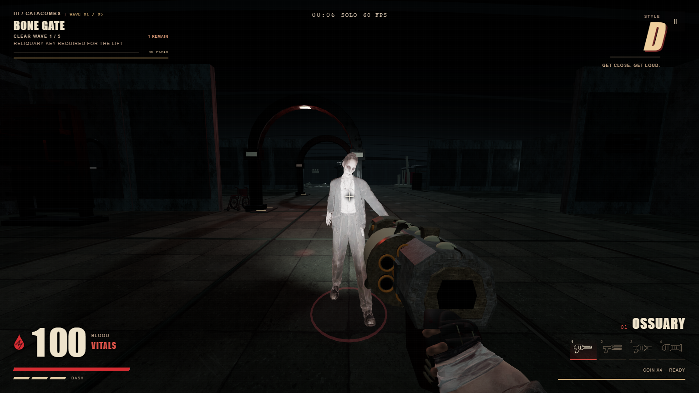
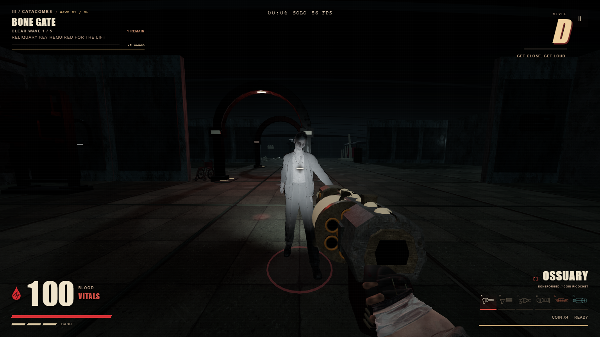
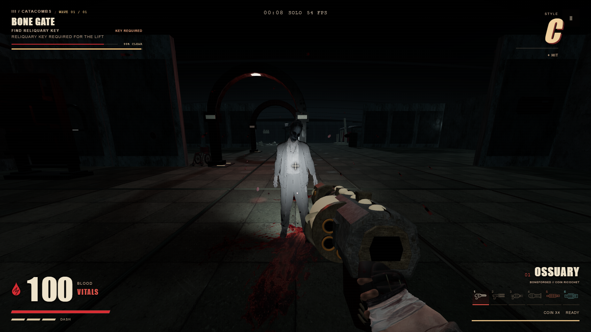
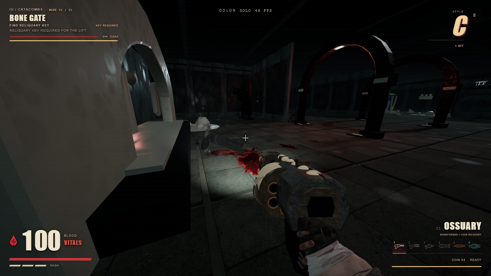
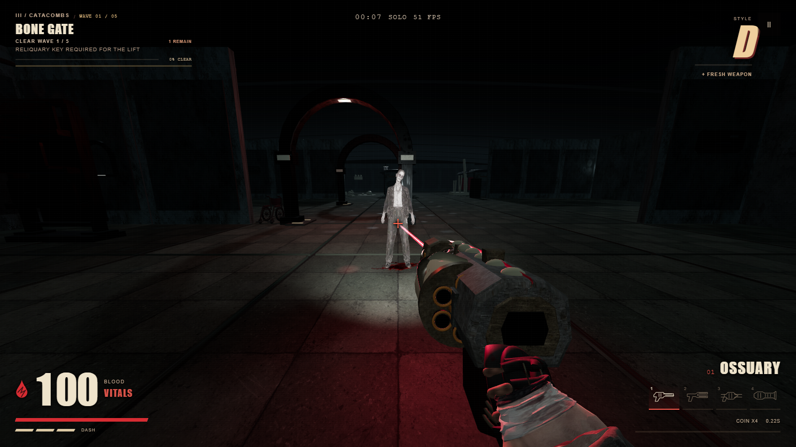
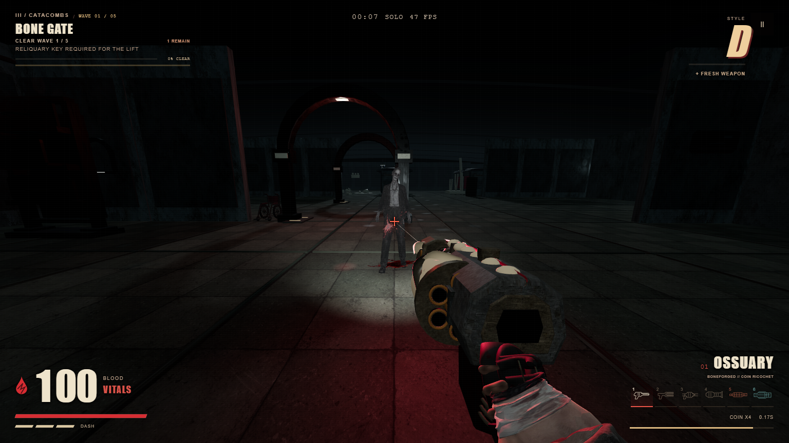
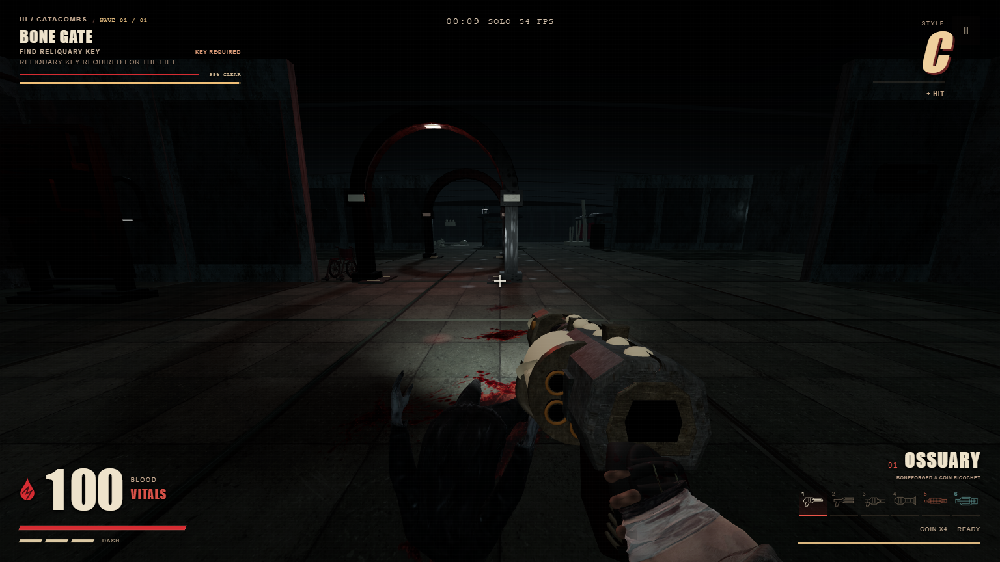
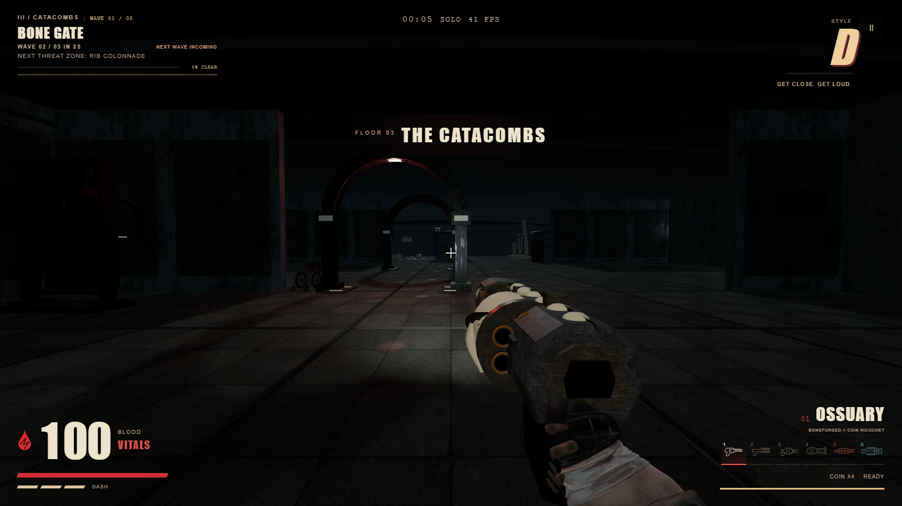
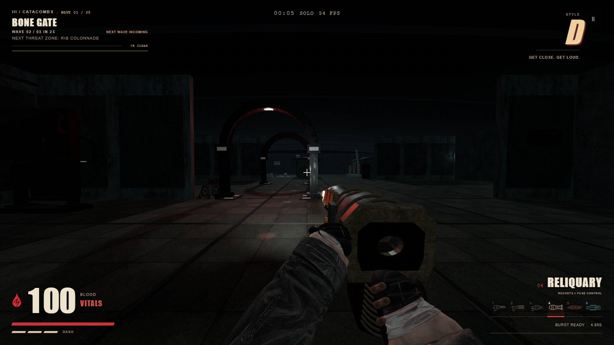
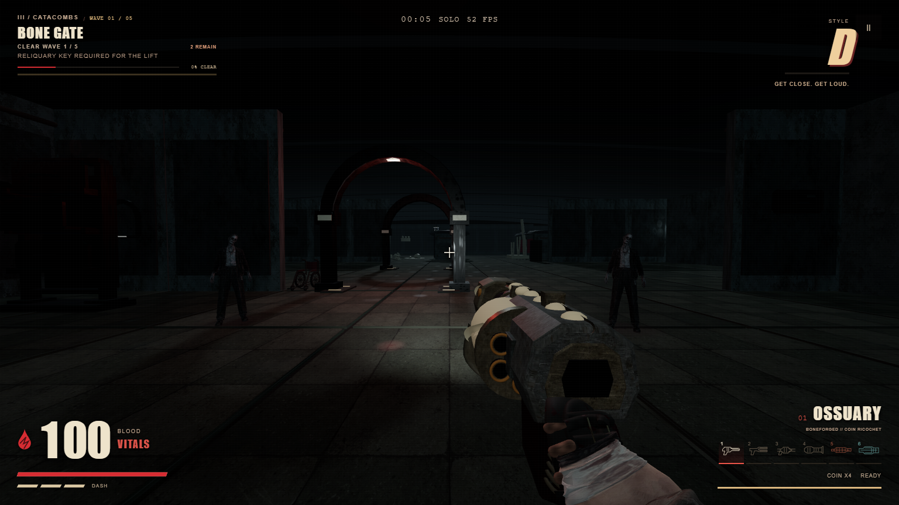

A fresh judge rated the previous contact blood, weapon readability, and close enemies at 1/3. This iteration follows those defects through implementation, real combat checks, and another image review.
Final independent verdict: 2/3, partial. Blood, weapon readability, and enemies improved from 1/3 to 2/3. Grounded collapse passes. Close enemies remain pale, the immediate hit is small, and Ossuary's mechanical motion is still subtle from the play camera.
Every gameplay image below is a browser capture. No generated concept image is presented as gameplay. The baseline and rejected intermediate review are kept alongside the final review.
The exported skin texture no longer emits light. Distant silhouettes improve; close torso exposure remains a follow-up. A hit during an authoritative attack preserves the attack pose; a real parry cancels it.




The brief contact splash follows the moving body, and ordinary bullet trails fade sooner. The existing atlas, pool sizes, and textured residue are retained.


Timing differs in this pair; it is an appearance comparison. The final state trace records real shots, movement, effect lifetimes, and collapse.

Toggle the actual idle, firing, and recovered states. The tests also verify that moving parts remain attached after runtime mesh batching.


